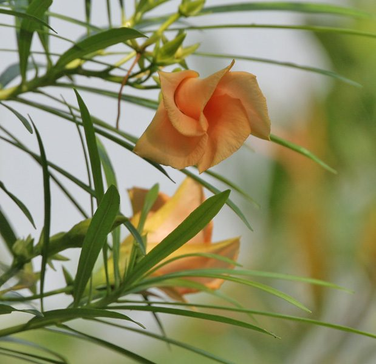

पीली कनेरYellow Oleander
Cascabela thevetia · Apocynaceae · FLR-0062

- Scientific name
- Cascabela thevetia (L.) Lippold
- Family
- Apocynaceae
- Hindi
- पीली कनेर
- Status here
- naturalized
- IUCN
- not evaluated
When to look कब देखें
Present all year.
पीली कनेर / Yellow Oleander
Cascabela thevetia (L.) Lippold — Apocynaceae
पीली कनेर (पीला कनेर या कनेर) — उत्तर प्रदेश के मंदिरों के बगीचों, सड़कों के किनारों, पार्कों और घरेलू उद्यानों में उगने वाला एक बहुत ही आम, सदाबहार बड़े आकार का झाड़ीनुमा पेड़ है। इस पर साल भर चमकीले पीले, कीप के आकार के (funnel-shaped) फूल खिलते हैं जो बहुत सुंदर दिखते हैं। इसके फल हल्के त्रिकोणीय, हरे और कठोर होते हैं जो पकने पर काले हो जाते हैं। अत्यधिक महत्वपूर्ण चेतावनी: यह पूरा पौधा अत्यंत विषैला होता है। इसके दूधिया रस, पत्तियों, फूलों और विशेष रूप से बीजों में 'थिवेटिन ए और बी' (thevetin A & B) नामक जानलेवा कार्डियक ग्लाइकोसाइड्स (cardiac glycosides) होते हैं। इसका एक बीज भी चबाने पर हृदय गति को रोककर मृत्यु का कारण बन सकता है, इसलिए बच्चों को इससे दूर रखना चाहिए।
Quick Identification त्वरित पहचान
| Feature | Description |
|---|---|
| Form | Large, erect evergreen shrub or small tree (2–5 m tall) with spreading branches and a milky sap |
| Leaves | Linear, narrow, sword-shaped leaves (7–15 cm long, 5–8 mm wide), dark glossy green above, paler beneath |
| Flowers | Large, fragrant, bright yellow (sometimes peach-orange) funnel-shaped flowers (5–7 cm long) with five twisted petals |
| Latex | Snapping any part of the plant exude a thick, white, highly toxic milky latex |
| Fruit & Seed | Angled, sub-globose, green fruit (2.5–3.5 cm diameter) resembling a small apple, ripening to black, containing a hard nut with 2–4 seeds |
Field tip: Look for a woody garden shrub with thin, grass-like glossy leaves and bright yellow funnel-shaped flowers. Warning: Do not break the leaves to touch the milky sap, and never handle the seeds. The plant is extremely poisonous.
Morphology आकारिकी
Biometrics (typical measurements for specimens in Basti):
| Feature | Measurement |
|---|---|
| Shrub height | 2–5 m |
| Leaf length | 7–15 cm |
| Leaf width | 5–8 mm |
| Flower length | 5–7 cm |
| Fruit diameter | 2.5–3.5 cm |
Leaves: The leaves are spirally arranged, linear-lanceolate, margins revolute (turned downwards), containing a waxy coating that reduces transpiration and protects against solar radiation.
Flowers & Latex: The flowers are held in terminal cymes, emitting a mild fragrance. The latex is present in all laticifer vessels of the stems, leaves, flowers, and roots, carrying high concentrations of toxic glycosides.
Vocalisations
Plants do not possess nervous systems or vocal organs and cannot produce sounds.
- Sound production: Silent; no sound production.
Behaviour & Ecology व्यवहार और पारिस्थितिकी
Cascabela thevetia is a highly resilient, drought-tolerant shrub that grows well in poor, sandy, and dry soils. It is native to tropical America but has naturalized extensively in Basti district's urban and rural tracts. Because of its extreme toxicity, no grazing mammal or insect herbivore feeds on its leaves, allowing it to act as an effective hedge barrier along fields.
Life Cycle / Phenology जीवन चक्र
- Growth: Evergreen, retaining its leaves throughout the year.
- Flowering: Blooms continuously, with a peak during the summer and rainy season (April–October).
- Propagation: Spreads via seeds contained within the hard fruits, which are highly resistant to moisture and can remain viable in the soil for years.
Associated Species / Interactions सहजीवी संबंध
- Pollinators: Large butterflies, hawkmoths (
[INS-0034 Death's Head Hawkmoth]), and carpenter bees visit the yellow flowers for nectar. - Shelter: The dense, evergreen foliage provides year-round nesting sites for small birds like the Ashy Prinia (
[BRD-0001]).
Predators / Natural Enemies शत्रु
- Insects: A few specialized sap-sucking bugs and aphids feed on the stem tips, tolerating the toxic latex.
- Mammals: Strictly avoided by goats, sheep, cattle, and nilgai (
[MAM-0011 Nilgai]) due to severe toxicity and bitter taste.
Agricultural / Human Relevance कृषि प्रासंगिकता
Extreme toxic hazard and ornamental hedge.
- High Toxicity Warning: All parts of the plant are highly poisonous to humans and animals. It contains cardiac glycosides (thevetin A, thevetin B, peruvoside). Ingestion causes nausea, vomiting, abdominal pain, diarrhea, cardiac arrhythmias, and heart block.
- Accidental Poisonings: Accidental poisoning in Basti occurs when children play with the apple-like green fruits or chew the seeds. A single seed contains enough toxin to cause fatal cardiac arrest. Immediate hospitalization and administration of digibind (or atropine) is necessary.
- Traditional Use: Sown in temples (mandir) for offering flowers to deities (Shiva). Grown as a living hedge around fields to prevent cattle from entering, as animals instinctively avoid it.
- Biopesticide: Some organic farmers boil the leaves in water to create a bitter spray that acts as a natural insect repellent for crop pests.
Expected Locally स्थानीय रूप से अपेक्षित
Not a field record. Written from published accounts for eastern Uttar Pradesh. No confirmed local sighting yet — if you have seen it, that is what the atlas needs.
अभी तक स्थानीय पुष्टि नहीं। यह विवरण प्रकाशित स्रोतों से है, किसी अवलोकन से नहीं।
Extremely common around local temples, shrines (than), schools, and house courtyards throughout Basti district. It is widely planted as a decorative hedge in Bahadurpur, Harraiya, and Babhnan blocks. Local elders are well aware of its poisonous nature and warn children not to touch the white milk or fruits.
Distribution वितरण
Global range: Native to tropical Central and South America (Mexico to Peru). It is now widely naturalized and cultivated as an ornamental throughout tropical Asia and Africa.
In India: Found in all states, commonly planted in gardens and temple grounds.
In Uttar Pradesh: Abundant in all districts as an ornamental shrub.
In Basti district / eastern UP: Naturalized resident; extremely common.
Research Questions शोध प्रश्न
- How do local bird species utilize the toxic canopy of Cascabela thevetia for nesting compared to non-toxic native shrubs in Basti?
- What is the frequency of accidental Yellow Oleander poisoning reported in Basti district hospitals over a five-year period? / बस्ती जिले के अस्पतालों में पांच वर्षों की अवधि में पीली कनेर के आकस्मिक विषाक्तता के कितने मामले सामने आए हैं?
- Can a child draw a map of their garden and mark the locations of any Yellow Oleander bushes, noting to never pick the green fruits? — A simple safety mapping activity.
- Is the aqueous leaf extract of Cascabela thevetia effective as a botanical insecticide against the Red Pumpkin Beetle (
[INS-0029])? - How does the flowering density of Cascabela thevetia change between the hot dry summer and the cool winter months in Basti? / बस्ती में पीली कनेर के फूलों की सघनता गर्म शुष्क गर्मियों और ठंडे सर्दियों के महीनों के बीच कैसे बदलती है?
Similar Species मिलती-जुलती प्रजातियाँ
| Species | Key Difference | हिंदी |
|---|---|---|
| Nerium oleander (Oleander / Lal Kaner) | Leaves are broader and arranged in whorls of three; flowers are pink or red, flat-topped (not tubular); also highly toxic. | लाल कनेर — विपरीत चौड़ी पत्तियां, गुलाबी/लाल चपटे फूल |
| Plumeria obtusa (Temple Tree / Champa) | Grows as a small succulent tree with very thick branches; leaves are large, broad, and leathery; flowers are large, white-yellow. | चम्पा — मोटे गूदेदार तने, बड़े चौड़े पत्ते |
| Tabernaemontana divaricata (Crape Jasmine / Chandni) | Shrub with shiny dark green leaves; flowers are pure white, pinwheel-shaped, unscented or mildly fragrant. | चांदनी — चमकदार पत्तियां, सफेद चक्राकार फूल |
Taxonomy & Classification वर्गीकरण
Original description. Carl Linnaeus originally described the plant in 1753 as Cerbera thevetia in Species Plantarum (Vol. 1, p. 209). The German botanist Michael Lippold transferred it to the genus Cascabela as Cascabela thevetia in 1980 in Feddes Repertorium (Vol. 91, p. 52). The genus name Cascabela is Spanish for "little bell" or "rattle," referring to the dry seeds rattling in the wind. The specific epithet thevetia honors the 16th-century French explorer André Thevet.
Subspecies. Monotypic. Older literature refers to this species as Thevetia peruviana (Pers.) K.Schum. or Thevetia neriifolia Juss. ex Steud., which are junior synonyms.
Family and order placement. Placed in the order Gentianales, family Apocynaceae, subfamily Rauvolfioideae, tribe Plumerieae.
Phylogenetic notes. Cascabela is closely related to Thevetia, but split based on molecular and morphological seed characters.
IUCN status rationale. Not evaluated (NE) by the IUCN Red List. It is a globally widespread ornamental plant with no threats of extinction.
Photo Gallery फोटो गैलरी
References संदर्भ
- Linnaeus, C. (1753). Species Plantarum. Laurentii Salvii, Holmiae, Vol. 1, p. 209. [original description as Cerbera thevetia]
- Lippold, M. (1980). Die Gattungen Thevetia L. und Cascabela Rafin. (Apocynaceae). Feddes Repertorium, 91, 45–55. [transfer to Cascabela]
- Brandis, D. (1906). Indian Trees. Archibald Constable & Co., London. [as Thevetia neriifolia]
- Sivarajan, V.V. & Balachandran, I. (1994). Ayurvedic Drugs and Their Plant Sources. Oxford & IBH Publishing, New Delhi, pp. 215–217.
- Eddleston, M., et al. (2000). Epidemic of self-poisoning with seeds of the yellow oleander (Thevetia peruviana) in northern Sri Lanka. New England Journal of Medicine, 342(6), 388–395. [details toxicity and cardiac symptoms]
- GBIF Occurrence Data — Cascabela thevetia (2026). GBIF taxon key: 3169652.
Source file: species/flora/weeds/yellow_oleander.md